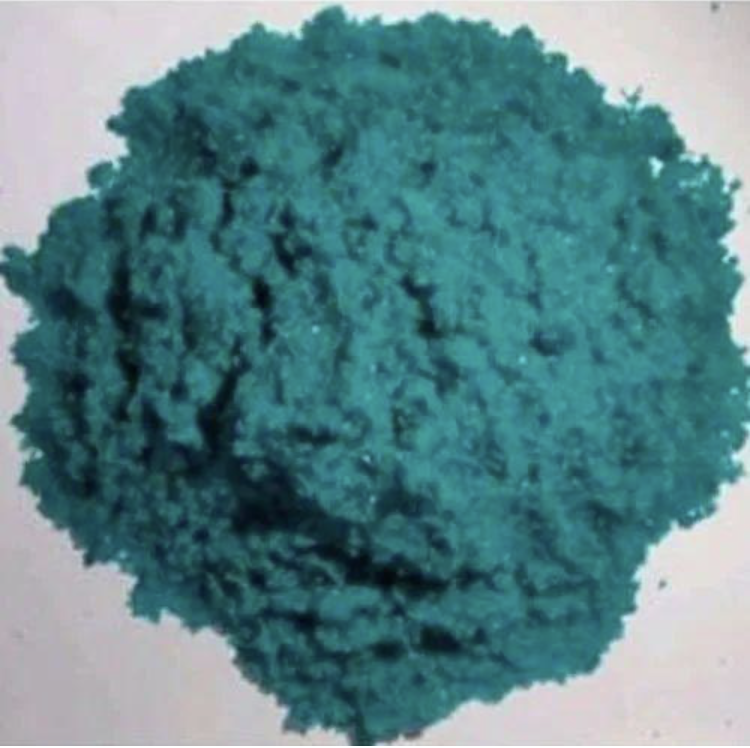
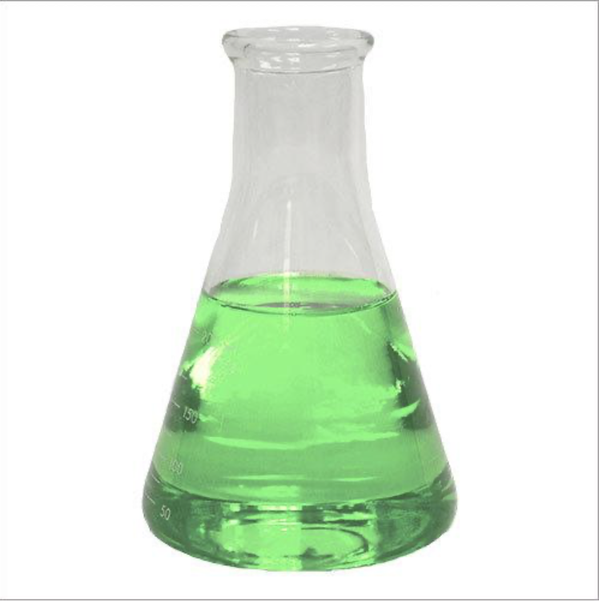
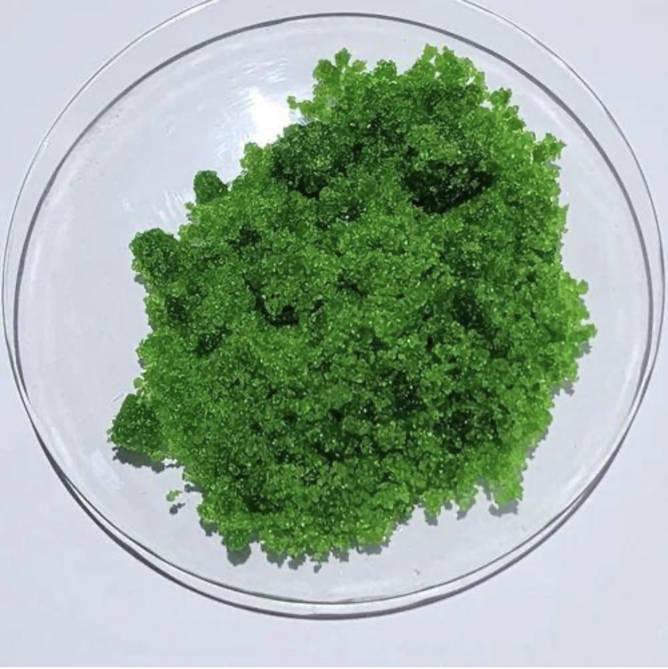
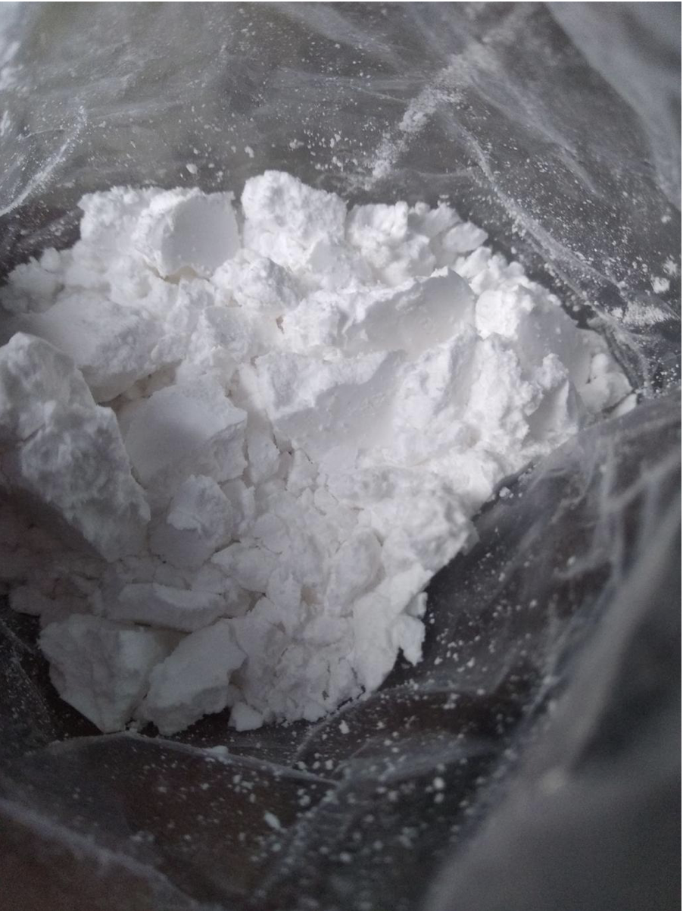
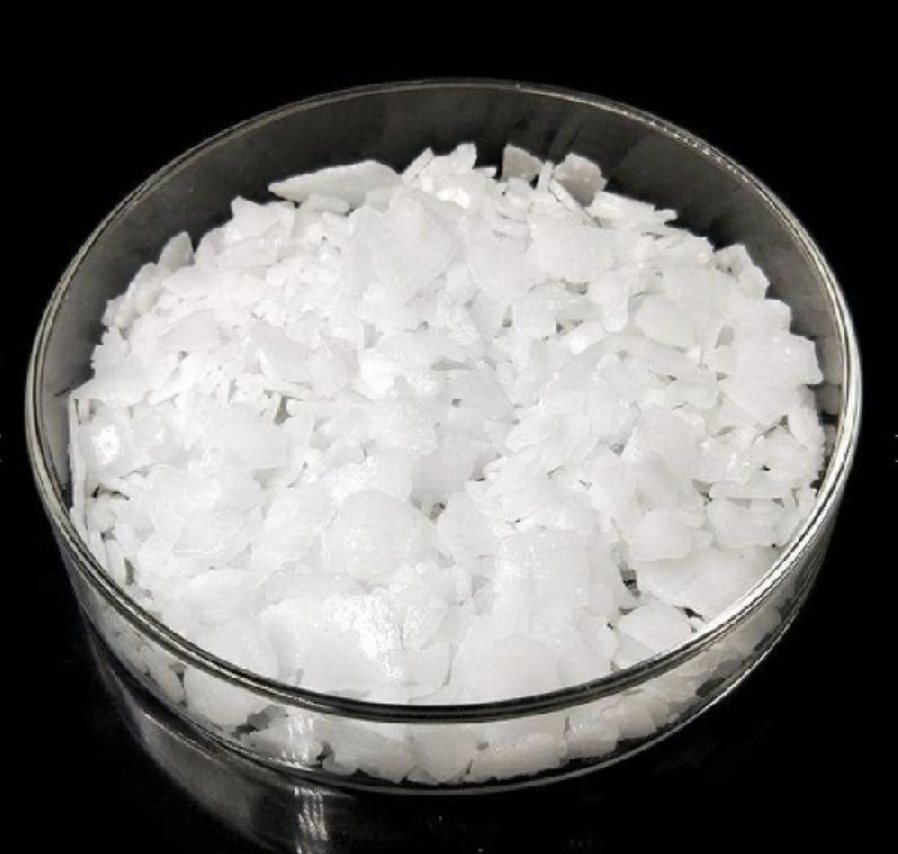
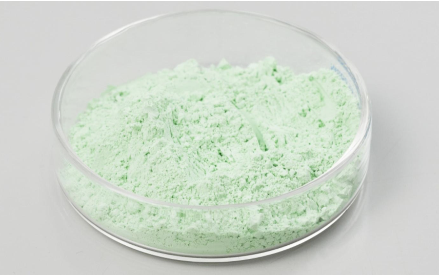
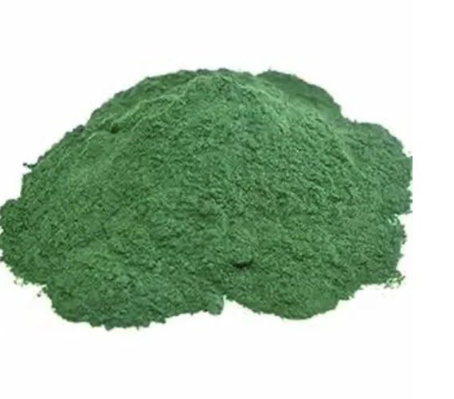
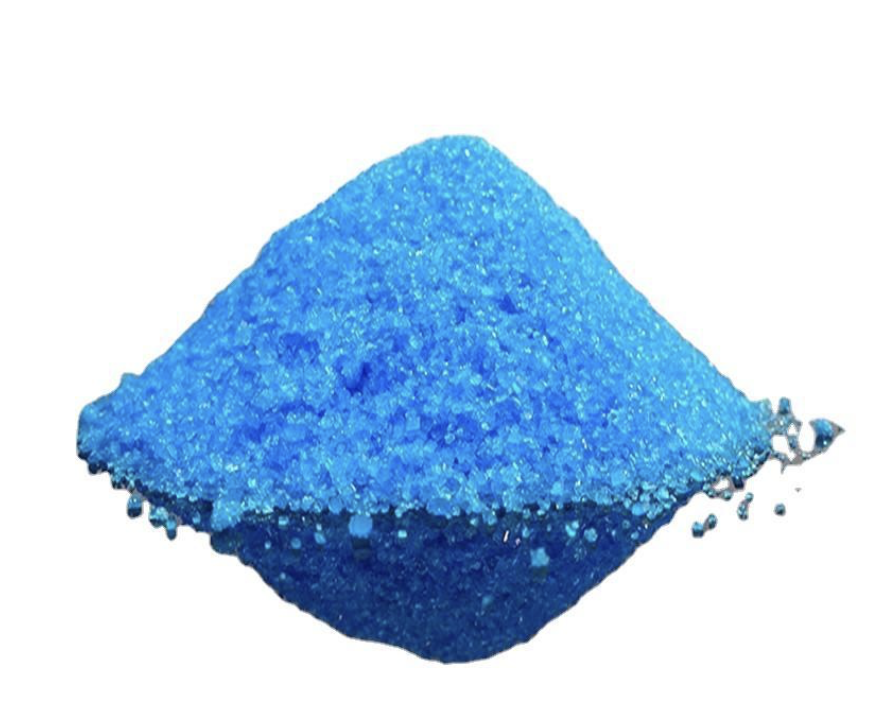
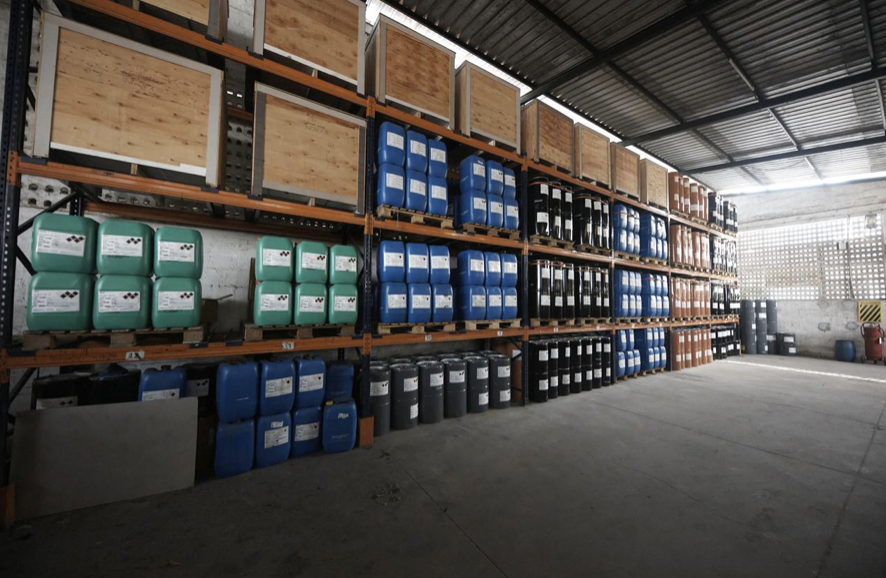
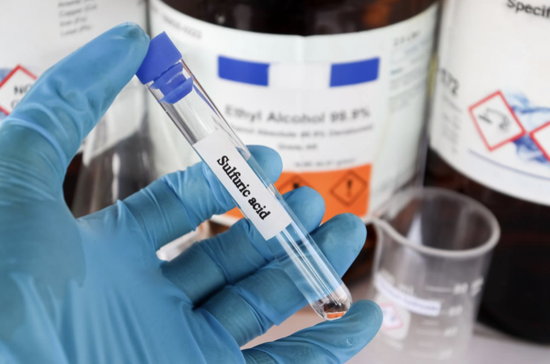

Nickel Sulphate

High-purity Nickel Sulphate is widely used in electroplating and surface finishing applications. It provides excellent metal deposition quality and stable bath performance for decorative and engineering plating processes.
Enquire Now →Nickel Sulphamate

Nickel Sulphamate is preferred for high-speed nickel plating due to its low stress and superior deposit properties. It is commonly used in electroforming, precision engineering, and industrial plating applications.
Enquire Now →Nickel Chloride

Nickel Chloride enhances anode corrosion and improves conductivity in nickel plating baths. It is an essential chemical for maintaining stable electroplating operations and consistent coating quality.
Enquire Now →Boric Acid

Boric Acid is commonly used as a buffering agent in electroplating baths to maintain pH stability and improve coating quality. It is also used across various industrial and chemical processing applications.
Enquire Now →Caustic Soda Flakes

Caustic Soda Flakes are widely used for cleaning, pH adjustment, and chemical processing in industrial operations. They offer high purity and effective performance for multiple manufacturing applications.
Enquire Now →Nickel Carbonate


Nickel Carbonate is used in catalyst production, electroplating chemicals, and specialty nickel compound manufacturing. It provides reliable purity and consistent chemical performance for industrial use.
Enquire Now →Copper Sulphate

Copper Sulphate is extensively used in electroplating, chemical processing, and metal treatment industries. It delivers excellent conductivity and consistent performance in plating bath formulations.
Enquire Now →Other Basic Chemicals

We also supply a wide range of industrial and electroplating chemicals to support various manufacturing requirements. Our products are sourced with a focus on quality, consistency, and reliable industrial performance.
Enquire Now →Sulfuric Acid

Sulfuric Acid is a key industrial chemical used in electroplating, metal treatment, and chemical manufacturing processes. It offers reliable performance for pH control, surface preparation, and industrial processing applications.
Enquire Now →